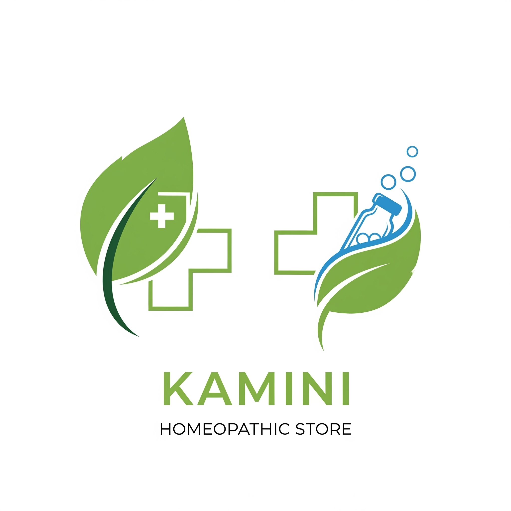

<!doctype html>
<html lang="en">
  <head>
    <meta charset="UTF-8" />
    <link rel="icon" type="image/svg+xml" href="data:image/svg+xml,%3csvg xmlns='http://www.w3.org/2000/svg' viewBox='0 0 24 24'%3e%3cpath d='M11.5725 0c-.1763 0-.3098.0013-.3584.0067-.0516.0053-.2159.021-.3636.0328-3.4088.3073-6.6017 2.1463-8.624 4.9728C1.1004 6.584.3802 8.3666.1082 10.255c-.0962.659-.108.8537-.108 1.7474s.012 1.0884.108 1.7476c.652 4.506 3.8591 8.2919 8.2087 9.6945.7789.2511 1.6.4223 2.5337.5255.3636.04 1.9354.04 2.299 0 1.6117-.1783 2.9772-.577 4.3237-1.2643.2065-.1056.2464-.1337.2183-.1573-.0188-.0139-.8987-1.1938-1.9543-2.62l-1.919-2.592-2.4047-3.5583c-1.3231-1.9564-2.4117-3.556-2.4211-3.556-.0094-.0026-.0187 1.5787-.0235 3.509-.0067 3.3802-.0093 3.5162-.0516 3.596-.061.115-.108.1618-.2064.2134-.075.0374-.1408.0445-.2256.0445-.1424 0-.6194-.1071-1.1128-.2357-.3933-.1012-.659-.2567-.8118-.44-.152-.1834-.2625-.3895-.31-.57-.0692-.224-.0966-.5131-.0966-.7634 0-.2452.0274-.529.0966-.7439.0469-.19.159-.4038.31-.57.152-.1834.4185-.3387.8118-.44.4934-.1286 1.0132-.2357 1.1128-.2357.0642 0 .134 0 .151.0013.0286.0026 1.0561 1.5198 3.8457 5.663-.0747.0366-1.9418 2.7148-4.1483 5.979-.7412 1.0891-.9649 1.3223-1.2832 1.4084-.1646.0446-.3647.0638-.6062.0638-.4174 0-.8274-.0647-1.15-.19C6.6953 20.095 4.7094 16.909 3.9945 13.2614c-.2725-1.4004-.4092-2.577-.4092-3.5907s.1367-2.1903.4092-3.5907c.7149-3.6476 2.7006-6.8335 5.6334-8.3121.2034-.105.4098-.18.6062-.18.2624 0 .8382.1214 1.5646.3571.0998.0342.5688.1599 1.0441.2787l.866.2732 2.4047 3.5583c1.3231 1.9564 2.4117 3.556 2.4211 3.556.0094.0026.0187-1.5787.0235-3.509.0067-3.3802.0093-3.5162.0516-3.596.061-.115.108-.1618.2064-.2134.075-.0374.1408-.0445.2256-.0445.1424 0 .6194.1071 1.1128.2357.3933.1012.659.2567.8118.44.152.1834.2625.3895.31.57.0692.224.0966.5131.0966.7634 0 .2452-.0274.529-.0966.7439-.0469.19-.159.4038-.31.57-.152.1834-.4185.3387-.8118.44-.4934.1286-1.0132.2357-1.1128.2357-.0642 0-.134 0-.151-.0013-.0286-.0026-1.0561-1.5198-3.8457-5.663.0747-.0366 1.9418-2.7148 4.1483-5.979.7412-1.0891.9649-1.3223 1.2832-1.4084.1646-.0446.3647-.0638.6062-.0638.4174 0 .8274.0647 1.15.19 2.1956 1.1234 4.1813 4.3093 4.8962 7.9577.2725 1.4004.4092 2.577.4092 3.5907s-.1367 2.1903-.4092 3.5907c-.7149 3.6476-2.7006 6.8335-5.6334 8.3121-.2034.105-.4098.18-.6062.18-.2624 0-.8382-.1214-1.5646-.3571-.0998-.0342-.5688-.1599-1.0441-.2787l-.866-.2732z'/%3e%3c/svg%3e" />
    <meta name="viewport" content="width=device-width, initial-scale=1.0" />
    <title> KAMINI HOMEOPATHIC MEDICAL STORE</title>
    <style>
#app{max-width:1280px;margin:0 auto;padding:2rem;text-align:center;font-family:Arial,sans-serif}header{display:flex;align-items:center;justify-content:space-between;position:relative;text-align:center;padding:1rem 0}.logo-container{flex:0 0 auto}.logo{max-width:150px;height:auto}.center-content{flex:1;text-align:center}h1{font-size:3rem;color:#2c3e50;margin:0}.greeting{font-size:1.5rem;margin-bottom:0;color:#333}#time-spent{font-size:.8rem;color:#666;flex:0 0 auto}@keyframes fadeIn{0%{opacity:0;transform:translateY(20px)}to{opacity:1;transform:translateY(0)}}.section{margin:2rem 0;text-align:left;padding:1rem;border-bottom:1px solid #eee;animation:fadeIn 1s ease-out;transition:transform .3s}.section:hover{transform:scale(1.02)}.section h2{color:#2c3e50;margin-bottom:.5rem}.section p,.section ul{line-height:1.6;color:#555}.map-container{margin:1rem 0}button{background-color:#4caf50;color:#fff;padding:10px 20px;border:none;border-radius:4px;cursor:pointer;font-size:16px;margin:5px;transition:background-color .3s,transform .2s}button:hover{background-color:#45a049;transform:scale(1.05)}@media (max-width: 768px){#app{padding:1rem}.logo{max-width:100px}h1{font-size:2rem}#time-spent{font-size:.7rem}.section{padding:.5rem}.map-container iframe{height:250px}}
    </style>
  </head>
  <body>
    <div id="app"></div>
    <script>
const l=()=>{const i=new Date().getHours();return i<12?"Good Morning":i<18?"Good Afternoon":"Good Evening"};document.querySelector("#app").innerHTML=`
  <header>
    <div class="logo-container">
      
    </div>
    <div class="center-content">
      <h1>Kamini Homeopathic Store</h1>
      <h2 class="greeting">${l()}, Customer!</h2>
    </div>
    <div id="time-spent"></div>
  </header>

  <section class="section">
    <h2>Our Motive</h2>
    <p>At KAMINI HOMEOPATHIC MEDICAL STORE, our primary motive is to provide our customers with the finest and most authentic homeopathic medicines available. We understand the importance of holistic health and the role that homeopathy plays in achieving it. Our commitment goes beyond just selling products; we strive to educate and guide our clients towards better health choices. We source our medicines from trusted manufacturers, ensuring purity and efficacy. Our team of knowledgeable professionals is dedicated to offering personalized advice, helping you select the right remedies for your specific needs. We believe in the power of natural healing and aim to make it accessible to everyone. By prioritizing quality and originality, we build trust and long-term relationships with our customers. Our store is a haven for those seeking alternative medicine solutions, and we are proud to contribute to the well-being of our community. In a world where health is paramount, we stand as guardians of genuine homeopathic practices, promoting wellness through safe and effective treatments. Join us in our journey towards healthier living, where every remedy is chosen with care and every customer is treated with respect. We are passionate about homeopathy and its potential to transform lives, offering not just medicines but a pathway to natural health. Our motive is rooted in integrity, compassion, and a deep commitment to your well-being, ensuring that you receive only the best in homeopathic care.</p>
  </section>

  <section class="section">
    <h2>About Homeopathy</h2>
    <p>Homeopathy, founded by Samuel Hahnemann in the late 18th century, is a holistic system of medicine that treats the individual as a whole rather than focusing on isolated symptoms. The core principle, 'like cures like,' suggests that substances causing symptoms in healthy people can cure similar symptoms in the ill. This approach emphasizes the body's innate ability to heal itself when stimulated appropriately. Homeopathic remedies are prepared through dilution and succussion, creating potentized medicines that are safe and free from side effects. Unlike conventional medicine, homeopathy considers mental, emotional, and physical aspects of health. It has been used for centuries to treat a wide range of conditions, from acute illnesses to chronic diseases. The beauty of homeopathy lies in its individualized treatment plans, where remedies are chosen based on the patient's unique constitution. This personalized care leads to sustainable healing and improved quality of life. At our store, we advocate for homeopathy as a complementary therapy that works in harmony with the body's natural processes. We provide resources and support to help you understand and benefit from this gentle yet powerful form of medicine. Homeopathy is not just a treatment method; it's a philosophy of health that empowers individuals to take control of their well-being. By addressing the underlying imbalances, it promotes long-term vitality and prevents recurring issues. Our commitment to homeopathy drives us to offer comprehensive information and high-quality remedies, ensuring you experience the full benefits of this time-tested system.</p>
  </section>

  <section class="section">
    <h2>About Homeopathic Medicine</h2>
    <p>Homeopathic medicines are derived from natural sources, including plants, minerals, and animal products, making them a safe alternative to synthetic drugs. The preparation process involves serial dilution and vigorous shaking, known as potentization, which enhances the therapeutic properties while minimizing toxicity. These remedies come in various forms such as pills, liquids, and ointments, catering to different needs. Homeopathy treats the root cause of ailments rather than suppressing symptoms, leading to long-lasting relief. It is particularly effective for chronic conditions like allergies, arthritis, and mental health issues. The medicines are non-addictive and can be used alongside conventional treatments without interactions. Our store offers a wide range of homeopathic medicines, carefully selected for their quality and potency. We ensure that every product meets stringent standards, providing you with confidence in your health choices. Whether you're new to homeopathy or a seasoned user, our experts are here to assist you. Embrace the natural path to wellness with our authentic homeopathic medicines. These remedies work by stimulating the body's vital force, encouraging self-healing and balance. Homeopathic medicine is gentle on the body, suitable for all ages, including infants and the elderly. It addresses not just physical symptoms but also emotional and psychological well-being, offering a comprehensive approach to health. At KAMINI HOMEOPATHIC MEDICAL STORE, we are dedicated to providing medicines that are pure, effective, and aligned with homeopathic principles, helping you achieve optimal health naturally.</p>
  </section>

  <section class="section">
    <h2>Companies We Deal With</h2>
    <p>We proudly partner with leading homeopathic companies to bring you the best products in the market. These collaborations ensure that we offer only the highest quality medicines, backed by years of research and expertise. Adel, known for its innovative formulations, provides remedies that address complex health issues with precision and care. Bakson delivers high-quality medicines supported by extensive clinical studies, making them a trusted choice for effective treatment. WSI specializes in wellness solutions that promote overall health and vitality, focusing on natural ingredients for sustainable results. RW offers reliable and effective treatments for various conditions, emphasizing purity and potency. SBL, with its rich heritage in homeopathy, ensures every product meets the highest standards of quality and efficacy. Medisyth focuses on natural ingredients, creating remedies that support the body's healing processes without harsh chemicals. By partnering with these reputable companies, we guarantee authenticity, safety, and effectiveness in every product we sell. Our store serves as a gateway to these premium brands, allowing you to access top-tier homeopathic solutions conveniently. We carefully select our partners based on their commitment to ethical practices, innovative research, and customer satisfaction. Explore our collection and discover how these companies contribute to your journey towards better health. Choosing the right medicine is crucial, and with our partnerships, you can trust that you're getting the best available options in homeopathy.</p>
    <ul>
      <li>Adel</li>
      <li>Bakson</li>
      <li>WSI</li>
      <li>RW</li>
      <li>SBL</li>
      <li>Medisyth</li>
    </ul>
    <p><strong>Note:</strong></p>
    <ul>
      <li>Patanjali Products are also available.</li>
      <li>All kinds of blood testing are also available with the trust of Thyrocare Pathology.</li>
    </ul>
  </section>

  <section class="section">
    <h2>Contact Us</h2>
    <p>At KAMINI HOMEOPATHIC MEDICAL STORE, we are always ready to assist you with your health needs and inquiries. Whether you have questions about our products, need advice on homeopathic treatments, or require information on our services, our team is here to help. We believe in building strong relationships with our customers, providing personalized support and guidance. Our store is committed to excellence in customer service, ensuring that every interaction is positive and informative. Feel free to reach out to us through any of the channels below, and we'll respond promptly. We value your trust and strive to make your experience with us seamless and beneficial. In addition to our homeopathic medicines, we offer convenient blood testing services through our partnership with Thyrocare Pathology, giving you comprehensive health solutions under one roof. Visit us or contact us today to learn more about how we can support your wellness journey. Your health and satisfaction are our top priorities, and we look forward to serving you with the best in homeopathic care.</p>
    <p><strong>Address:</strong> VWJ8+43Q, Deen Dayal Nagar, Khadra, Lucknow, Uttar Pradesh 226020</p>
    <div class="map-container">
      <iframe src="https://www.google.com/maps/embed?pb=!1m18!1m12!1m3!1d740!2d80.9126951!3d26.8802248!2m3!1f0!2f0!3f0!3m2!1i1024!2i768!4f13.1!3m3!1m2!1s0x399bfdfba40e85eb%3A0x68b50db45c765c56!2sKAMINI%20HOMEOPATHIC%20STORE!5e0!3m2!1sen!2sin!4v1633024800000!5m2!1sen!2sin" width="100%" height="300" style="border:0;" allowfullscreen="" loading="lazy"></iframe>
    </div>
    <p><strong>Phone:</strong> <button onclick="window.location.href='tel:08707896574'">Call Us</button></p>
    <p><strong>WhatsApp:</strong> <button onclick="window.open('https://wa.me/7376952655', '_blank')">Chat on WhatsApp</button></p>
    <p><strong>Email:</strong> <button onclick="window.location.href='mailto:skreshive@gmail.com'">Send Email</button></p>
  </section>
`;const h=Date.now();function r(){const i=Date.now()-h,o=Math.floor(i/36e5),s=Math.floor(i%36e5/6e4),n=Math.floor(i%6e4/1e3);document.getElementById("time-spent").textContent=`Time on site: ${o}h ${s}m ${n}s`}r();setInterval(r,1e3);
    </script>
  </body>
</html>